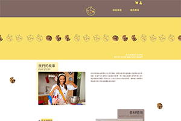

莊欣瑜
認真負責、樂於學習、隨和好相處，擁有4年的採購經歷，於2021年中接觸到前端程式語言，發現對其熱愛超過原先的工作，於是決心跳出舒適圈，全心投入，於今年9月中參加由中興大學主辦的UIUX介面優化網頁設計實務班，藉此補足技能不足處，希望藉此能成為貴司的一份子。
I am a responsible and friendly person who also loves to learn new things. I have four years of experience in the procurement field. However, in the middle of 2021, I started to learn front-end programming languages. Comparing it with the previous jobs, I realized that I am more passionate about it. Therefore, I decided to step out of my comfort zone and immerse myself in these web languages. I attended the UI UX class organized by Chung Hsing University in September to compensate for deficiencies. Wishing to join your company, I believe that I can achieve in the role that you are hiring for.
專業技能
網頁切版
- HTML
- CSS
- RWD響應式網站
程式語言
- Javascript
- jQuery
其他
- 英語
- photoshop
- illustrator
作品
-
Yum Cookie電商平台
- 架構模仿boostrap柵格系統
- 首頁使用css animate使banner及餅乾圖片自動產生位移，製作動畫效果
台灣步道指南
- 資料取用政府資料開放平台"步道"之JSON檔
- 使用leaflet及openStreetMap外掛建立地圖效果
- 使用leaflet cluster外掛減少網頁開啟時的時間，提升效能
工作經歷
採購人員
鑽全實業股份有限公司 2021年5月~2021年8月負責追蹤採購進度，向廠商催料。
採購人員
橋締股份有限公司 2019年4月~2021年4月負責核對ERP系統銷貨數字金額，協助出貨，廠商/貨運公司/報關行聯繫及進貨進度跟催。
國貿採購
奧斯陸國際 2016年10月~2018年12月廠商/貨運公司/報關行聯繫及進貨進度跟催，原廠型錄翻譯(英翻中)
學歷
國立暨南國際大學外國語文學系
2012年9月~2016年6月興趣
- 慢跑/爬山
- 追劇